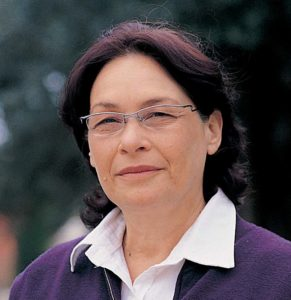
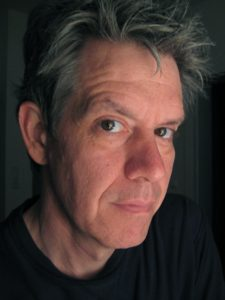
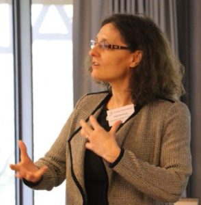

Tamar Flash
Tamar Flash is a professor at the Department of Computer Science and Applied Mathematics, Weizmann Institute of Science, Israel. She earned her BSc and MSc degrees in Physics from the Tel-Aviv University, Israel. She received her Ph.D. in Medical Physics from the Massachusetts Institute of Technology (1983) where she enrolled in the Harvard-MIT Division of Health Science and Technology. She continued with her postdoctoral training at MIT, at the Department of Brain and Cognitive Science and the Artificial Intelligence Laboratory (1983-1985). In 1985 she joined the Department of Computer Science and Applied Mathematics at the Weizmann Institute of Science where she established a research group, focusing on motor control and robotics and also served as the department head (2004-2007). She was a visiting professor at MIT, the College de France, Berkeley University and a fellow at the Radcliffe Institute for Advanced Studies, Harvard University.
The focus of her research is on computational neuroscience, human motor control, movement disorders, the control of hyper-redundant flexible biological and robotic systems and humanoid robots.
Mark Coniglio

Media artist, composer and programmer Mark Coniglio is widely considered to be a pioneering force in the exploration of dance and interactive media. Beginning with Troika Ranch (http://troikaranch.org), the media intensive dance company he co-founded with Dawn Stoppiello, and later as the creator of the media software Isadora (http://troikatronix.com), he has spent nearly three decades enmeshed in the relationship of movement, media, and computing.
Coniglio’s talk will begin with an overview of his artistic practice, showing how Troika Ranch’s early works – where sensory systems, responsive media software and live performers combined to produce an interactive “reflection” of the body – evolved into an approach where technology actively intervened in the creation, rehearsal and performance of movement. He will conclude by championing potential future interventions, where computational artificial intelligence will be placed into conflict with human bodily knowledge, to provoke the invention of new movement, unforeseen choreographic structures, and compelling relationships between the body and media.
Nadia Bianchi-Berthouze
Nadia Berthouze is Professor in Affective Computing and Interaction. Her main area of expertise is the study of body posture/movement as a modality for recognising, modulating and measuring human affective states in HCI. She has published more than 170 papers in affective computing, HCI, and pattern recognition. She was awarded the 2003 Technical Prize from the Japanese Society of Kansei Engineering and she has been invited to give a TEDxStMartin talk (2012). She is/was: PI on the EPSRC-funded Emo&Pain project to design affective technology to support rehabilitation in chronic pain; co-I on the EPSRC-funded Digital Sensoria project investigating the use of biosensors to measure subjective responses to tactile experiences; co-I on the ILHAIRE project investigating laughter in human-avatar interaction; EU-FP7 Marie Curie IRSES UBI-HEALTH: Exchange of Excellence in Ubiquitous Computing Technologies to Address Healthcare Challenges, H2020 HUMAN Manufacturing, and HOLD funded by the Wellcome Trust.
The premise of her research is that affect, emotion, and subjective experience should be factored into the design of interactive technology. Indeed, for technology to be truly effective in our social network, it should be able to adapt to the affective needs of each user group or even each individual. The aim of her research is to create systems/software that can sense the affective state of their users and use that information to tailor the interaction process. Body movement and touch behaviour are major medium for this goal: they support cognitive processes, regulates emotions, and mediates affective and social communication. She is currently pursuing three lines of research looking at these modalities as channels to induce, recognize and measure the quality of experience of humans and in particularly of humans interacting and engaging through/with technology in various domains including physical rehabilitation. In the context of physical rehabilitation, she is investigates how multisensing and multimodal technology can help overcome the psychological barriers to remain physically active and re-engage with one’s own body.